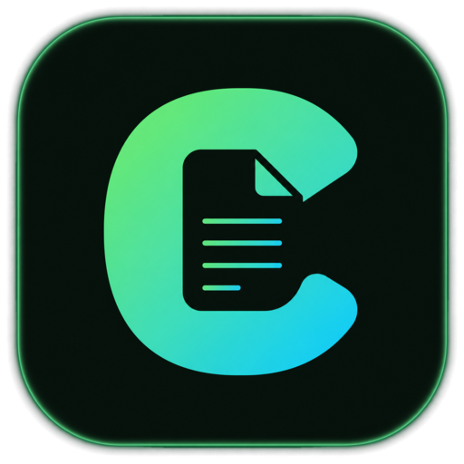

PPT Toolkit Setup
正在下载 PPT 组件
首次使用需要准备一次，之后每次都是秒开。

C
1
下载
2
安装
3
准备环境
查看详细过程
Downloading
C
0%
正在下载 PPT 组件
首次使用需要准备一次，之后每次都是秒开。
查看详细过程
Downloading
正在下载 PPT 组件
首次使用需要下载一次，之后不再需要。
1 / 3
查看详细过程
Downloading
PPT 组件
Tweaks
Tweaks
方案（快捷键 1 / 2 / 3）
A 阶段旅程
B 装配环
C 保守精修
状态
自动演示（完整循环）
检查中
下载中
安装（解压）中
准备 Python 环境
就绪
失败
主题
浅色
深色
跟随系统
模拟网速（真实共享出口 ≈ 1.1 MB/s）
弱网 · 300 KB/s
共享出口 · 1.1 MB/s
快速 · 5 MB/s
重播入场动画